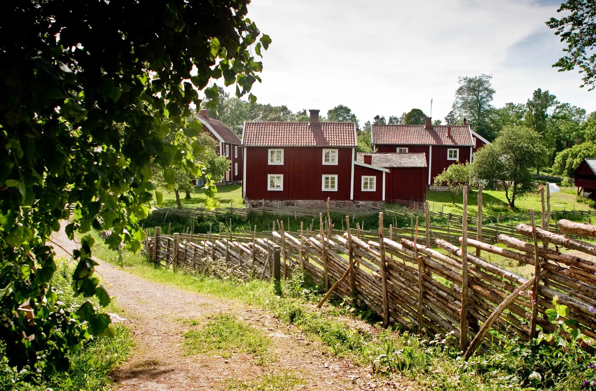

1943년, 작은 잡화점에서 시작된 이야기
1943년, 스웨덴의 시골 마을에서 17세의 잉바르 캄프라드가 문구류와 소품을 판매하는 작은 잡화점을 열면서 IKEA의 역사가 시작되었습니다. 당시에는 우편 주문 방식으로 상품을 판매하며 합리적인 가격과 실용적인 제품을 강조했습니다.


1943년 스웨덴의 작은 잡화점에서 시작된 IKEA가 어떻게 전 세계적인 홈퍼니싱 브랜드로 성장했는지, 그 역사와 비전을 정리했습니다.
1943년, 스웨덴의 시골 마을에서 17세의 잉바르 캄프라드가 문구류와 소품을 판매하는 작은 잡화점을 열면서 IKEA의 역사가 시작되었습니다. 당시에는 우편 주문 방식으로 상품을 판매하며 합리적인 가격과 실용적인 제품을 강조했습니다.
1948년부터 IKEA는 본격적으로 가구 판매를 시작합니다. 평평한 상자에 포장해 고객이 직접 조립하는 방식은 운송비를 줄이고 더 저렴한 가격으로 가구를 제공할 수 있는 계기가 되었습니다.

IKEA의 비전은 단순히 가구를 판매하는 것이 아니라, 더 많은 사람들이 더 나은 일상을 누릴 수 있도록 돕는 것입니다. 이를 위해 IKEA는 디자인, 기능, 품질, 지속가능성을 고려하면서도 합리적인 가격대를 유지하는 것을 목표로 합니다.

1950~1959년: 스웨덴에서 IKEA 운영 확장
1960~1969년: 덴마크와 노르웨이에 매장 오픈
1970년대: 오스트레일리아, 오스트리아, 캐나다, 독일, 홍콩, 일본, 쿠웨이트, 네덜란드, 싱가포르, 스위스 등 스칸디나비아 외 국가로 확장
1980년대 초: 잉바르 캄프라드, 완전한 독립성과 장기적 비즈니스 관점을 확보할 수 있는 소유 구조 모색 잉바르는 이를 IKEA 브랜드에 '영원한 생명'을
부여하고자 하는 노력으로 설명했습니다. 리테일 운영 소유권을 IKEA 컨셉과 IKEA 브랜드로부터 분리하여, 독립적인 개별 비즈니스 그룹이 프랜차이즈 시스템 아래에서
IKEA 브랜드를 운영하도록 하는 것이 잉바르가 고안한 방식이었습니다.